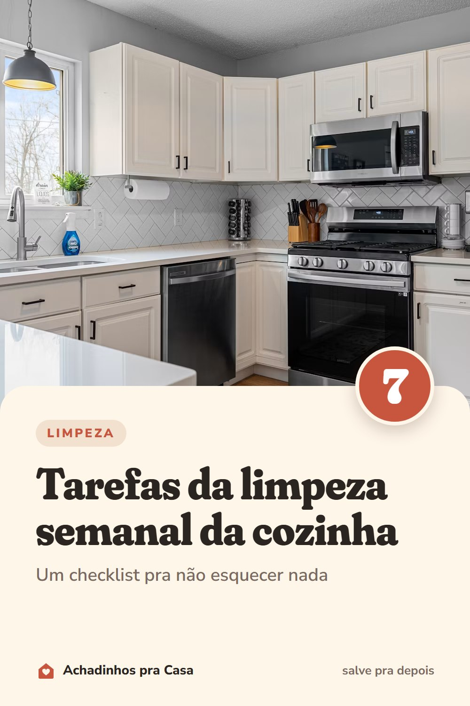

Limpeza
Checklist de limpeza semanal da cozinha (7 tarefas)
Um checklist pra não esquecer nada.
- Micro-ondas por dentroUma tigela com água e limão aquecida por alguns minutos amolece a sujeira.
- Geladeira sem vencidosTire o que passou do prazo antes das compras da semana.
- Frente dos armários e puxadoresÉ onde a mão encosta o tempo todo.
- Escorredor de louçaLave também a bandeja de baixo, onde a água para.
- Grelhas e queimadores do fogãoSujeira fresca sai muito mais fácil.
- Panos e esponjaTroque os panos e a esponja com frequência.
- LixeiraLave e seque antes de colocar o saco novo.